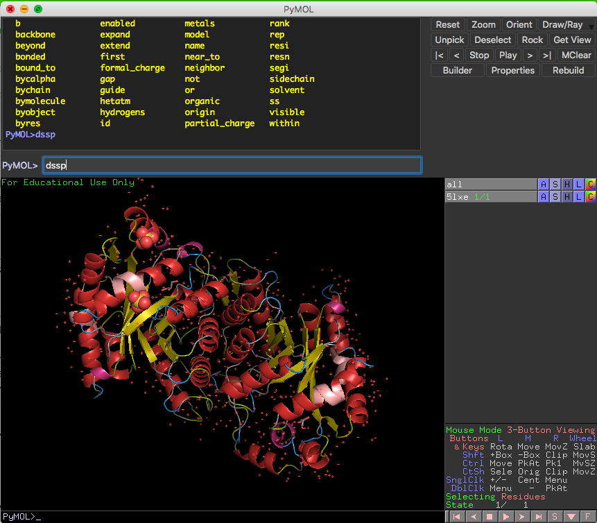
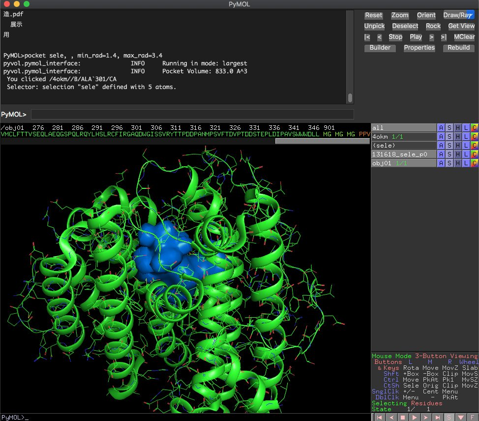
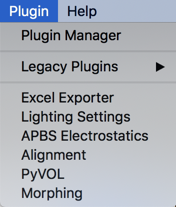
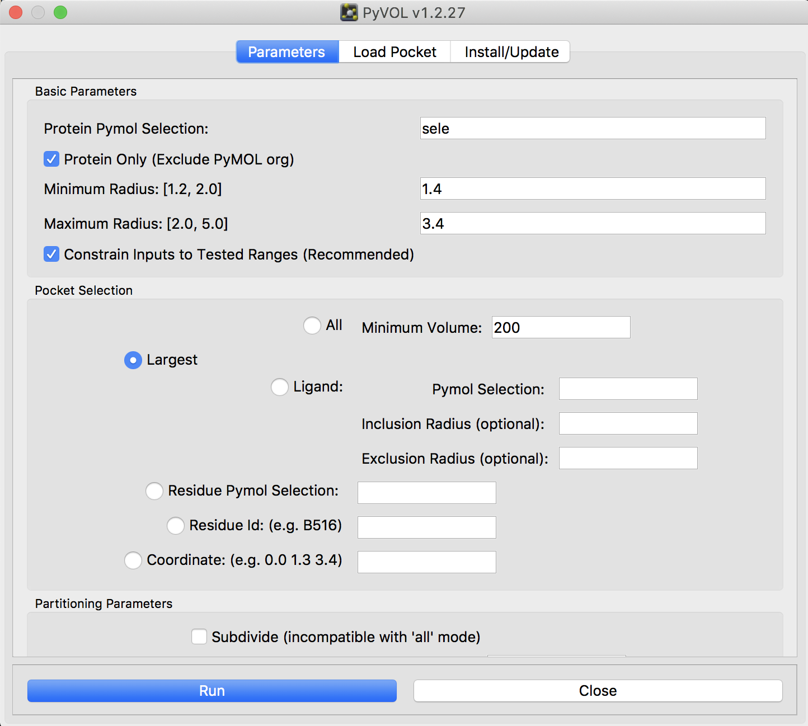
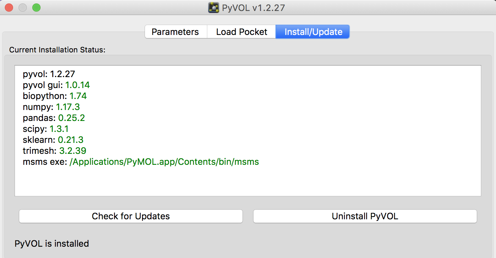
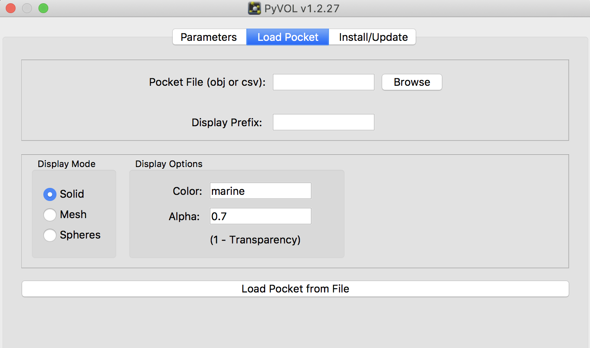
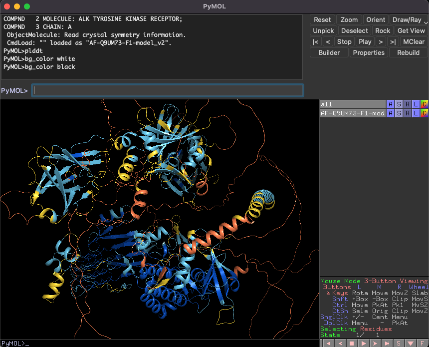

第6章 プラグインを使う
PyMOLは追加のプラグインを使って機能を拡張させることができます。プラグインといっても、Excelなどで言うところの、マクロみたいなものです。理論的には、PyMOLに実装されている機能を組み合わせれば実現可能なことは、このプラグイン機能を使うことでワンコマンドで達成できるようになります。
ここではできあいのプラグインのインストール方法を示しつつ、その中でも便利なものをいくつか紹介したいと思います。
環境
- macOSまたはLinux OS。Windowsの場合はやり方が異なる可能性があります。
- PyMOL 2.0以降をインストールしてある（バイナリ版・conda版・オープンソース版どれでも可）
PyMOLプラグインのインストール方法
プラグインのダウンロード
例えば私が管理しているもので、 https://github.com/YoshitakaMo/pymol-psico があります。これは大元のpsicoからクローンしてきたものです。これを、例としてホームディレクトリ以下のDocumentsディレクトリにインストールします。
cd ~/Documents
git clone https://github.com/YoshitakaMo/pymol-psico.git
以上でこのpymol-psicoディレクトリをコピーしてくることができます。中身のプラグインはすべてpython言語で書かれています。オープンソース版でPyMOLをインストールした場合には、この文法はインストールに使用したpythonのバージョンに依存します。
使用のための初期設定
このプラグインを使える状態にするには、先程のpymol-psicoディレクトリにPyMOL側からPATHを通し、さらに初期化コマンドを入れて上げる必要があります。これは、pymolを開いて以下のコマンドを入力してあげると可能です。
sys.path.append(os.path.expanduser('~/Documents/pymol-psico'))
import psico.fullinit
入力する場所はここ（下の PyMOL>でも良い）
1行目はPATHの追加コマンドです。先程、psicoディレクトリを~/Documentsにインストールしたので、上の例では(os.path.expanduser('~/Documents/pymol-psico'))となっていますが、~/Documents以外のディレクトリに置いた場合は適宜このPATHを変更してください。2行目は、psicoモジュールの初期化コマンドです。Pythonのimportコマンドでpsicoを使えるようにします。
しかし、これを毎回PyMOLを立ち上げるたびに入れるのは面倒です。そこで、PyMOLを開いた時に最初に読み込まれる設定ファイル、~/.pymolrcに上の設定を書いておきましょう。（参考：3.1 FileのEdit pymolrcの項）そうすると、PyMOL起動時に自動で上のプラグインが使えるようになります。
DSSPプラグイン
プラグインのインストール方法の手順に従ってpsicoのインストールがうまく行っていれば、改めて起動した後にPyMOLのコマンドラインでdsspというコマンドが使えるようになっているはずです。このコマンドは開いているタンパク質に対して二次構造アサインメントプログラムのDSSPをかけてくれて、その計算結果をもとに表示を切り替えてくれます。ただし利用するためにはあらかじめmkdsspコマンドがインストールされ、かつ動作することが条件です。現在、最新版のDSSPは以下のHomebrewコマンドからインストールすることができます。
brew install brewsci/bio/dssp
このdsspパッケージの中にmkdsspコマンドが入っています。ちなみにCentOS 7の方は、yum -y install dsspとすれば簡単にmkdsspコマンドがインストールできます。バージョンがちょっと古いですけど問題なく動作するはずです。
そしてPyMOLの画面に戻り、dsspコマンドを打てば、以下のような表示になります。 
DSSPプログラムによって判定された二次構造アサインの結果に対応して、PyMOL上の二次構造表示が変化し、色分けされたものになります。DSSPによる二次構造アサイン法とPyMOLネイティヴで入っているアサイン法は微妙に異なるため、細かいところをよーくみてみると、ものによっては二次構造アサインが変化している場合があります。DSSPによる二次構造判定法は現在もなおProtein Data Bankで公式に採用されていますので、こちらを使って表示させたほうが良いと個人的に思います。
また、MDシミュレーションの結果をPyMOLで表示している方の場合、初期構造からシミュレーションの途中でタンパク質の二次構造が変化した場合でも、そのフレームでdsspと打てば、そのフレームに合わせた二次構造表示に変化してくれるところが便利です。
これらのコマンドの説明はPyMOL >の欄にhelp dsspと打てば表示されます。オプションが色々ついているPyMOLコマンドは多いので、確認しておきましょう。例えばこのdsspコマンドの場合は
DESCRIPTION
Secondary structure assignment with DSSP.
http://swift.cmbi.ru.nl/gv/dssp/
ARGUMENTS
selection = string: atom selection {default: all}
exe = string: name of dssp executable {default: mkdssp}
raw = string: atom property to load raw dssp class into {default: 'custom'}
color = string: color in response to secondary structure {default: 1/ON}
EXAMPLE
dssp all, /usr/local/bin/mkdssp, raw=text_type
color gray
color red, text_type H
color orange, text_type G
color yellow, text_type E
color wheat, text_type B
color forest, text_type T
color green, text_type S
set cartoon_discrete_colors, 1
SEE ALSO
dss, stride
と表示されます。colorがデフォルトでONになっています。二次構造についての色分けを自動でしてほしくない場合には、dssp color=0と打てば、さっきのような色分けをしないで二次構造表示だけ変更してくれます（←地味によく使う）。
DSSPプラグインの設定を変更してみる
DSSPのカラーリングが気に入らない、他の色で塗り分けたい！ という場合は、せっかくなのでプラグインを書き換えてみましょう（ちなみに上の設定のカラーリングは有名なSolarized Darkのテーマを模しています）。
psidoディレクトリの中にあるediting.pyの258行目あたりからがdsspの関数定義になっています。
def dssp(selection='(all)', exe='', raw='custom', state=-1, quiet=1, color=1):
'''
DESCRIPTION
Secondary structure assignment with DSSP.
http://swift.cmbi.ru.nl/gv/dssp/
ここでcolor=1となっていますが、dsspコマンドを打ってみた時に、デフォルトでカラーリングを変えてほしくない場合はここをcolor=0としておくとよいでしょう。
この下をさらに見てみると、色分け設定をしている部分が見られます。
# if color=1
if color == 1:
cmd.color('gray', selection)
cmd.set_color('H_color', [220, 50, 47])
cmd.color('H_color', raw+' H')
cmd.set_color('G_color', [211, 54, 130])
cmd.color('G_color', raw+' G')
cmd.set_color('I_color', [255, 170, 170])
cmd.color('I_color', raw+' I')
cmd.set_color('E_color', [196, 177, 3])
cmd.color('E_color', raw+' E')
cmd.set_color('B_color', [42, 161, 152])
cmd.color('B_color', raw+' B')
cmd.set_color('T_color', [38, 139, 210])
cmd.color('T_color', raw+' T')
cmd.set_color('G_color', [211, 54, 130])
cmd.color('G_color', raw+' G')
cmd.set_color('S_color', [133, 153, 0])
cmd.color('S_color', raw+' S')
cmd.set('cartoon_discrete_colors', '1')
cmd.util.cnc(selection)
cmd.set_colorはPyMOLに最初から実装されているコマンドset_colorそのものであり、ここではH_colorという名前でRGB色使いの(220, 50, 47)を定義しています。詳しい説明はPyMOLWikiを読んでね。DSSPの定義で、αヘリックスはH、βシートはEという一文字表記になっているので、ここでのcmd.color('H_color', raw+' H')部分は、「DSSPでHと判定された残基をH_colorで色付けする」という意味になっています。つまり、ここの色の値を変えれば、DSSPの二次構造判定に対して思い通りの色分けを行うことができます。
PyVOL GUIプラグイン
2019年10月24日、BioRxivにPyMOLプラグインのPyVOLというのを開発したよという論文が投稿されました。
これはタンパク質の中の空隙、つまり基質や薬剤などが入りそうな空間を検出し、体積の値の表示もしてくれるプラグインのようです。ちょっと興味があったのでインストールすることにしてみました。
使用可能な環境
- Linux OSまたはmacOS 10.14.6 (Mojave)以前。10.15 (Catalina)では今のところ動作しません。（現在対応中だそうです）
PyVOLのインストール
以下のGitHubにてこのプラグインをメンテナンスしてくれているようです。 https://github.com/schlessingerlab/pyvol/
ここの https://github.com/schlessingerlab/pyvol/blob/master/pyvolgui.zip にプラグインのZIPファイルが置いてあるのでDownloadボタンを押すと、pyvolgui.zipというファイルがダウンロードされます。これを展開すると、中にはpyvolguiとpyvol_pluginというディレクトリの2つがあるのですが、たぶんpyvolguiだけで動作してくれるように思えます。よって、このディレクトリをPyMOLのプラグインディレクトリにコピーしてあげます。
お使いのmacOSにて、インストーラー版でPyMOLをインストールした場合（Licenseを求められる方）は/Applications/PyMOL.app/Contents/share/pymol/data/startup/に、Homebrewを使ってOpen-source版をインストールした場合（Licenseがいらない方）には/usr/local/Cellar/pymol/2.3.0/libexec/lib/python3.7/site-packages/pmg_tk/startupに、それぞれコピーしてあげます。Linuxの場合はpymolがインストールされているディレクトリを見つけてpython3.x/site-packages/pmg_tk/startupあたりを探ればたどり着けるんじゃないですかね（適当）。
コピーしたら、PyMOLを起動している場合はいったん閉じて改めて起動します。すると、PluginメニューのところにPyVOLが増えているはずです。
このPyVOLを選択してみて、メニューが開けたら成功です。
追加のプログラムのインストール
インストーラー版
PyVOLを動かすためにはいくつかのライブラリやプログラムを追加でインストールさせてあげる必要があります。上のPyVOLメニューでInstall/Updateのタブを開き、ここの左に表示されているInstall PyVOLボタンを押します。
1分くらい待っていると追加プログラムがすべてインストールされ、使用可能な状態になります。
ちなみにmacOS catalinaでは動作しませんでした（Mojaveまでは動作します）。
subprocess.py", line 1522, in _execute_child
raise child_exception_type(errno_num, err_msg, err_filename)
OSError: [Errno 86] Bad CPU type in executable: 'msms'
これはcatalinaになってから32bitのプログラムを切り捨てたことに起因しています。現在公式で対応中だそうです。
Open-Source版
Open-source版の場合は、もしかしたら追加のプログラムを手動でインストールする必要があるかもしれません。もしかしたら上と同じやり方で動作させることができるかもしれないので、先にそっちを試してください（雑）。Homebrewでインストールしていた場合、msms exeを除く他のPythonライブラリは以下の1コマンドでインストールできます。
pip3.7 install bio-pyvol
msms exeについてですが、これは http://mgltools.scripps.edu/downloads のところからMSMS 2.6.1をダウンロードして解凍すると、中にmsms.MacOSX.2.6.1が存在しますので、それを利用します(macOS Mojave以前の場合)。これを、/usr/local/bin/msmsとして利用できるようにコピーしてあげます。
cp ~/Downloads/msms_MacOSX_2.6.1/msms_MacOSX_2.6.1 /usr/local/bin/msms
この後、Open-source PyMOLを一度再起動してこのInstall/Updateタブを見てみたときに、msms exeのところが/usr/local/bin/msmsと表示されていればOKです（本当は/usr/local/bin以下はHomebrewでインストールしたもののみにしておきたいところですが……）。
Linux OSの場合は64 bit版msmsが公開されているので、それをダウンロードして同様に/usr/local/bin以下にコピーすれば動作します。
以上でPyVOLが利用可能になります。
簡単な使い方
タンパク質を選択しておいてからPyVOLプラグインのParametersタブのRunボタンを押すだけです。Load Pocketのタブでは描画方法を色々変えることもできます。（詳細はいつか書きます）
 ## pLDDTカラーリングプラグインプラグインのインストール方法の手順に従って森脇のpymol-psicoのインストールがうまく行っていれば、改めて起動した後にPyMOLのコマンドラインでplddtというコマンドが使えるようになっています。このコマンドはAlphaFold2またはColabFoldで予測された構造に対し、予測のpLDDT値に応じて色分けを行ってくれます。
デフォルトでの色分けはAlphaFold Protein Structure Databaseで使われている配色に準じています。
別のカラーリングスキームとしてspectrumがあります。例えばplddt (selection), spectrum, 50, 90とすると、(selection)に入れたオブジェクトについてpLDDT値の下限（赤色）を50に上限（青色）を90としてグラデーション配色してくれます。
詳細はhelp plddtを御覧ください。